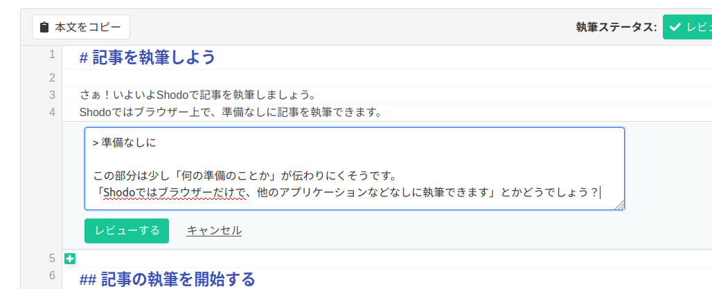
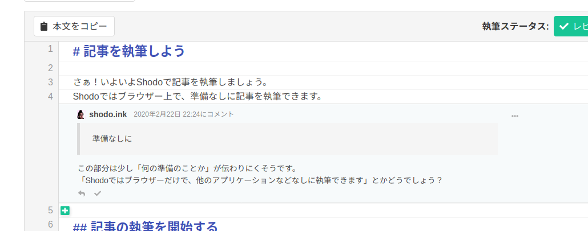
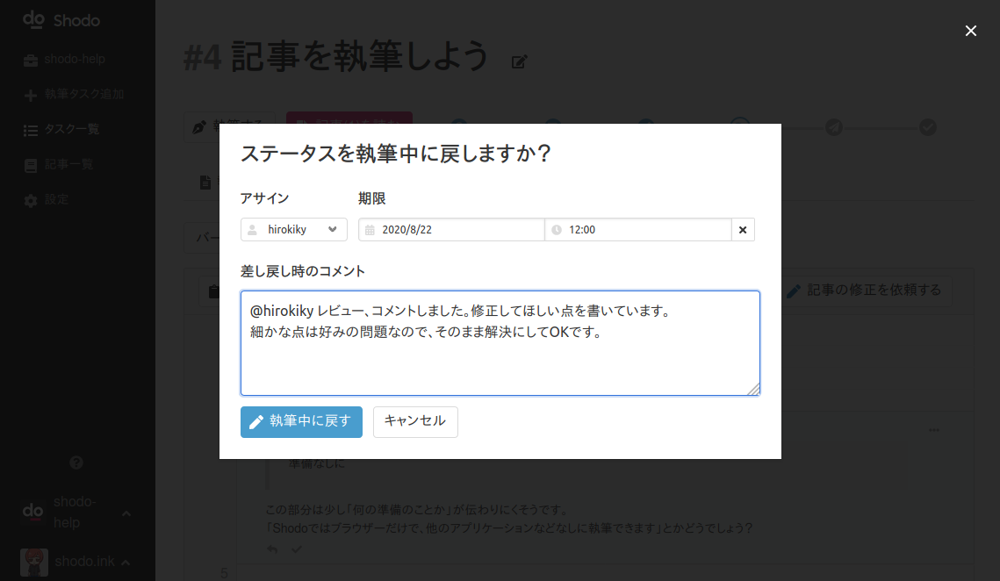

レビューをしよう¶
本当に素晴らしい作品は、一人では作り上げられないものです。 記事のレビューを通して、より読み手に伝わり、読み手の気持ちを動かすような記事を作りましょう。
記事をレビューする¶
Shodoで記事をレビューするには、執筆タスク画面から「記事を読む、レビューする」タブをクリックします。

レビュー画面では書き上がった記事を閲覧して、レビューコメントを残せます。 画面を開いた段階では、最新版の記事が表示されます。

レビューコメントを残す¶
記事にカーソルを合わせると、記事の各行の左に ＋ のアイコンが表示されます。
＋ アイコンをクリックすることで記事へのレビューコメントを残せます。
コメントにはMarkdown形式でコメント文を書けます。
書き終わったら「レビューする」をクリックしてレビューコメントを残しましょう。

レビューコメントは以下のように表示されます。 このコメントは執筆タスクを見られる全アカウントに共有されます。

執筆者は後ほど、レビューコメントを執筆画面から見られます。 レビュアーはレビューコメントを残すことに注力すれば問題ありません。
レビューが終わってOKとする場合¶
記事をじっくり読んでコメントができたあとは、レビューをOKとするか、記事の修正を依頼するかを選びましょう。 レビューをOKにする場合、レビュー画面右上の「レビューOKにする」ボタンをクリックしてください。 以下のようにレビューをOKにするときのコメントを残す画面が表示されます。

コメントを入力して、「レビューOKにする」をクリックしてください。
なにか伝えたいことがある場合は、この画面でコメントを残しつつ、レビューOKとしましょう。 レビューOKにする場合は、記事の執筆ステータスが「レビューOK」に変更されます。 執筆タスクの「期限」と「アサイン」を確認して、記事の公開作業をする人にアサインされているか確認しておきましょう。
レビューを差し戻す場合¶
記事を書き直してほしいときは、レビューコメントをしたあとに記事の修正を依頼しましょう。 レビュー画面右上の「記事の修正を依頼する」ボタンをクリックしてください。 以下のように記事を差し戻すときのコメントを残す画面が表示されます。

コメントを入力して、「執筆中に戻す」をクリックしてください。
記事の全体感についてや、依頼する修正内容について追加で伝えたいことがあるときはコメントしておくと良いでしょう。 たとえば「再レビューが不要です」と伝えたり、「対象の読者が全体的に絞られていない印象です」といった全体感の説明をしても良いでしょう。 執筆者がレビューを返されたときに、具体的にどれくらい書き直せば良いのか、どういうアクションを取ってほしいかを伝えると作業がスムーズに進むでしょう。
修正を依頼する場合、執筆ステータスが「執筆中」に変更されます。 記事にアサインされているアカウントは、ステータス変更によって再度記事に修正が必要であると気づけます。
レビューコメントを書くポイント¶
レビューコメントを書くポイントをお伝えします。 良いコメントをすることで、相手にも伝わりやすく、納得感のあるものになるでしょう。 ここではレビューすべき文章校正の方法ではなく、レビューコメントをするときの姿勢やワンポイントをお伝えします。
具体的な指摘をする¶
ぼんやりと「良くない」「わかりにくい」「伝わらなそう」というコメントは混乱を招きやすいです。 どこを改善したほうが良いと思うか、何をしてほしいのかを具体的に伝えましょう。 伝えないことは伝わりませんので、少々面倒に感じてもキチンとコメントしたほうが、最終的にはやりとりの時間を減らせるでしょう。
NG例 「この部分がわかりにくい」
良い例
> Shodoではブラウザー上で、準備なしに記事を執筆できます。
読者さんには、準備なしというのが「どの準備のことか」が伝わりにくいと思います。
以下のようにするのはどうでしょう？
> Shodoではブラウザーだけで、他のアプリケーションなどを使わずに執筆できます
より具体的に「何が改善点と感じるか」を伝えましょう。 できればコピー&ペーストできるような提案を書いてあげるとより親切です。
対象読者の気持ちになって読む¶
レビューをするときには、文章の間違いを指摘する人ではなく、読者としても読むようにしましょう。 実際に記事が読まれるときになって、記事を読むであろう対象読者の人がどう感じるかをイメージしましょう。 文章が伝わるのか、言いたいことを伝えられているのか、心を掴めているのかが大切です。 具体的なアクションを読者に求める記事の場合は、そのアクションを取りたくなっているか、取ってほしいアクションを明示できているかをチェックしましょう。
一番大切なのは、誤字がないことではなく、読んでほしい人に伝えたいことが伝わることです。 レビュアーはこの観点を忘れずに持っておきましょう。
良い点と悪い点の両方を伝える¶
レビューしようとすると、どうしても文章の悪い点に目が行きがちです。 ですが、悪い点ばかり見つけようとすると、良い点が見つけられなくなってしまいます。
レビューコメントをするときは、良い点を見つけたときも積極的にコメントしましょう。 たとえば「この表現はとてもワクワクして良いですね。商品を購入したくなりそうです」など、感じたことを書きましょう。 執筆者に対して良かった点もフィードバックすることで、より今後良い文章、伝わる文章が書けるようになるでしょう。